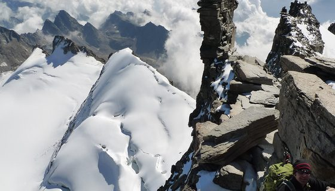
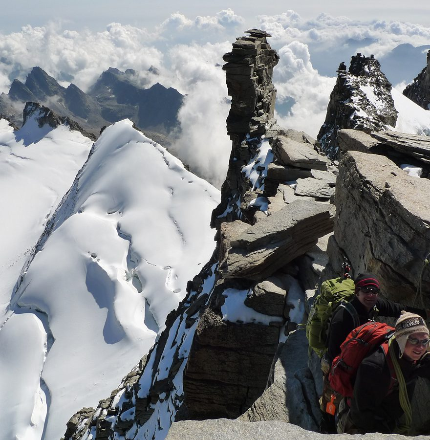

<!DOCTYPE html>
<html lang="en">
<head>
<meta charset="UTF-8" />
<meta name="viewport" content="width=device-width, initial-scale=1.0, viewport-fit=cover" />
<title>SummitReady — Mountain Detail</title>

<!--
  ════════════════════════════════════════════════════════════════════════════
  SUMMITREADY · MOUNTAIN DETAIL + ROUTE SELECTION — visual prototype

  ONE MOUNTAIN. ONE DECISION SURFACE. Selecting a route expands in place on
  the same page — there is no separate Route Detail screen. 3D Route Preview
  is the only other surface, and it is an immersive visual mode, not an
  information page.

  DATA: the mountain is addressed by canonical id (uk-lake-helvellyn), never by
  display name, and routes carry stable ids + a provenance state. Production
  fills these from the Summit Data Engine and Route Engine; this file invents
  nothing silently — a field with no value renders "Not recorded".

  SUMMIT ELEVATION ≠ ROUTE ASCENT. Helvellyn's summit is 950 m altitude;
  Striding Edge accumulates 820 m of ascent. They are stored, labelled and
  displayed separately throughout.

  Prototype only. Does not modify Summit Data Engine, Route Engine, Mountain
  Lookup, Track, offline tracking, Readiness, Training Plan or Expeditions.
  ════════════════════════════════════════════════════════════════════════════
-->

<script src="https://cdn.tailwindcss.com"></script>
<link rel="preconnect" href="https://fonts.googleapis.com">
<link rel="preconnect" href="https://fonts.gstatic.com" crossorigin>
<link href="https://fonts.googleapis.com/css2?family=Inter:wght@400;500;600;700;800&display=swap" rel="stylesheet">
<script>
  tailwind.config = { theme: { extend: {
    colors: { ink:'#05090B', accent:'#167DF7', train:'#24EFA4', warn:'#E9B949' },
    fontFamily: { sans:['Inter','system-ui','-apple-system','sans-serif'] },
  } } }
</script>
<style>
  :root { --ink:#05090B; --accent:#167DF7; --train:#24EFA4; --warn:#E9B949;
          --i2:rgba(255,255,255,.62); --i3:rgba(255,255,255,.42); --grid:rgba(255,255,255,.09); }
  html, body { margin:0; background:var(--ink); color-scheme:dark; }
  .no-sb { -ms-overflow-style:none; scrollbar-width:none; }
  .no-sb::-webkit-scrollbar { display:none; }
  .ph { background-color:#101c28; background-image:
        linear-gradient(165deg, rgba(22,125,247,.12), rgba(0,0,0,0) 48%),
        linear-gradient(to top, #070c0e 0%, #101c28 42%, #21405e 72%, #4d6d8e 100%); }
  .ph > img { opacity:0; transition:opacity .5s ease; }
  .ph > img.ok { opacity:1; }
  .glass     { background:rgba(255,255,255,.07); border:1px solid rgba(255,255,255,.13); backdrop-filter:blur(14px); }
  .navglass  { background:rgba(5,9,11,.94); backdrop-filter:blur(22px) saturate(140%); }
  .panel     { background:linear-gradient(158deg, rgba(18,30,44,.92) 0%, rgba(10,16,21,.94) 62%, rgba(8,12,16,.96) 100%);
               border:1px solid rgba(255,255,255,.075); }
  .panel-sub { background:rgba(255,255,255,.04); border:1px solid rgba(255,255,255,.07); }
  .pressable { transition:transform .12s ease, filter .12s ease; }
  .pressable:active { transform:scale(.98); filter:brightness(1.14); }
  .route-on  { border-color:rgba(22,125,247,.75) !important;
               box-shadow:0 0 20px -8px rgba(22,125,247,.9), inset 0 0 26px -16px rgba(22,125,247,.9); }
  #scrim, #toast, #gallery, #handoff { transition:opacity .28s ease, transform .3s cubic-bezier(.22,1,.36,1); }
  .expand { animation:grow .34s cubic-bezier(.22,1,.36,1) both; }
  @keyframes grow { from{opacity:0;transform:translateY(-8px)} to{opacity:1;transform:none} }
  @media (prefers-reduced-motion: reduce) { *,::before,::after { animation:none !important; transition:none !important; } }
  :focus-visible { outline:2px solid var(--accent); outline-offset:2px; border-radius:6px; }
  .safe-top { padding-top:calc(12px + env(safe-area-inset-top, 0px)); }
  .safe-bot { padding-bottom:env(safe-area-inset-bottom, 0px); }
</style>
</head>
<body class="font-sans text-white antialiased">

<div class="relative mx-auto w-full max-w-[430px] min-h-screen bg-ink overflow-x-hidden">
  <main id="screen"></main>
  <div id="pageSpacer" class="h-[96px]"></div>

  <!-- one fixed stack: sticky primary actions sit directly above the navigation -->
  <div id="bottomStack" class="fixed bottom-0 left-1/2 -translate-x-1/2 w-full max-w-[430px] z-30">
    <div id="actionBar" class="hidden"></div>
    <div class="navglass border-t border-white/[.07] safe-bot" id="navBar">
      <div id="tabs" class="flex items-start justify-around pt-[10px] pb-[12px]"></div>
    </div>
  </div>

  <!-- immersive 3D Route Preview -->
  <div id="view3d" class="fixed inset-0 z-40 bg-ink hidden overflow-y-auto no-sb"></div>

  <!-- photo lightbox -->
  <div id="gallery" style="opacity:0;pointer-events:none" class="fixed inset-0 z-50 bg-black/94 flex flex-col"></div>

  <!-- Track handoff -->
  <div id="scrim" style="opacity:0;pointer-events:none" class="fixed inset-0 z-[55] bg-black/72 backdrop-blur-[2px]"></div>
  <div id="handoff" style="transform:translate(-50%,105%)"
       class="fixed bottom-0 left-1/2 w-full max-w-[430px] z-[56] rounded-t-[22px] border-t border-white/10
              bg-[#0B1113] px-[17px] pt-[14px] pb-[30px] safe-bot"></div>

  <div id="toast" style="opacity:0;transform:translate(-50%,8px)"
       class="pointer-events-none fixed left-1/2 bottom-[104px] z-[60] max-w-[92%]
              px-[15px] py-[9px] rounded-full glass text-[11.5px] font-semibold text-center"></div>
</div>

<script>
/* ═════════════════════ CANONICAL MOUNTAIN ═════════════════════
   Addressed by id, not display name. Production resolves this from Explore's
   mountain lookup → Summit Data Engine. Every field carries a provenance
   state so the UI can distinguish verified data from what it simply lacks.  */
const MOUNTAIN = {
  id: 'uk-lake-helvellyn',
  name: 'Helvellyn',
  summitElevation: 950,              /* ALTITUDE of the summit, never an ascent */
  region: 'Lake District',
  country: 'England',
  tags: ['Classic', 'Challenging', 'Popular'],
  hero: 'mockup-assets/md-hero.jpg',
  description: "Helvellyn is one of the Lake District's most iconic mountains, offering dramatic ridges, breathtaking views and a variety of routes for all abilities.",
  facts: [
    { icon:'peak',  label:'Summit',   value:'950 m',        state:'verified' },
    { icon:'pin',   label:'Location', value:'Lake District',state:'verified' },
    { icon:'rock',  label:'Terrain',  value:'Rock, grass',  state:'verified' },
  ],
  practical: [
    { icon:'pin',      label:'Nearest town', value:'Glenridding',  state:'verified' },
    { icon:'parking',  label:'Parking',      value:'Pay & Display', state:'verified' },
    { icon:'clock',    label:'Best season',  value:'Apr – Oct',     state:'candidate' },
    { icon:'map',      label:'OS map',       value:'OL5',           state:'verified' },
    { icon:'grid',     label:'Grid ref',     value:null,            state:'missing'  },
    { icon:'coffee',   label:'Facilities',   value:null,            state:'missing'  },
  ],
  photos: ['mockup-assets/tr-p1.jpg','mockup-assets/tr-p2.jpg','mockup-assets/tr-p3.jpg',
           'mockup-assets/tr-p4.jpg','mockup-assets/md-preview.jpg','mockup-assets/md-r1.jpg'],
};

/* ═════════════════════════ CANONICAL ROUTES ═════════════════════════
   Stable ids and a version, as the Route Engine will supply. `ascent` is
   ACCUMULATED CLIMB — deliberately distinct from MOUNTAIN.summitElevation.
   `startAltitude` + `ascent` are what make the two values reconcilable.    */
const ROUTES = [
  { id:'striding-edge', v:3, name:'Helvellyn via Striding Edge', badge:'Most Popular',
    km:10.4, ascent:820, startAltitude:150, time:'4–6 hrs',
    tags:['Challenging','Ridge','Exposed','Classic'], img:'mockup-assets/md-r1.jpg', state:'verified',
    summary:'A classic and exhilarating ridge route with unforgettable views.',
    description:'A challenging but iconic route taking in the famous Striding Edge ridge. Expect dramatic scenery, some exposure and an unforgettable day in the mountains. The ridge is a genuine scramble in places and should not be attempted in high wind or winter conditions without the right skills.',
    facts:[ { icon:'pin', label:'Start point', value:'Glenridding', state:'verified' },
            { icon:'rock', label:'Terrain', value:'Rock, grass, ridge', state:'verified' },
            { icon:'alert', label:'Exposure', value:'Expect exposure', state:'verified' },
            { icon:'bars', label:'Difficulty', value:'Challenging', state:'verified' },
            { icon:'map', label:'OS map', value:'OL5 — The English Lakes (Eastern Area)', state:'verified' },
            { icon:'grid', label:'Grid reference', value:null, state:'missing' } ],
    dna:{ Steepness:.78, Terrain:.70, Exposure:.92, Technicality:.66, 'Elevation demand':.74 } },

  { id:'swirral-edge', v:2, name:'Helvellyn via Swirral Edge',
    km:9.2, ascent:740, startAltitude:210, time:'4–5 hrs',
    tags:['Challenging','Ridge','Exposed'], img:'mockup-assets/md-r2.jpg', state:'verified',
    summary:'A shorter ridge ascent with a steep, rocky finish.',
    description:'Swirral Edge is shorter and a little less exposed than Striding Edge, but the final pull onto the summit plateau is steep and loose in places. Often combined with Striding Edge to make a circuit.',
    facts:[ { icon:'pin', label:'Start point', value:'Glenridding', state:'verified' },
            { icon:'rock', label:'Terrain', value:'Rock, scree, ridge', state:'verified' },
            { icon:'alert', label:'Exposure', value:'Some exposure', state:'verified' },
            { icon:'bars', label:'Difficulty', value:'Challenging', state:'verified' },
            { icon:'map', label:'OS map', value:'OL5 — The English Lakes (Eastern Area)', state:'verified' },
            { icon:'grid', label:'Grid reference', value:null, state:'missing' } ],
    dna:{ Steepness:.82, Terrain:.66, Exposure:.74, Technicality:.60, 'Elevation demand':.68 } },

  { id:'thirlmere', v:2, name:'Helvellyn from Thirlmere',
    km:12.1, ascent:660, startAltitude:290, time:'5–6 hrs',
    tags:['Moderate','Valleys','Scenic'], img:'mockup-assets/md-r3.jpg', state:'verified',
    summary:'The gentlest way up, on good paths from the western side.',
    description:'A steady, non-technical ascent from Thirlmere with no scrambling. The longest of the four in distance but the least demanding underfoot, and the usual choice in poor visibility.',
    facts:[ { icon:'pin', label:'Start point', value:'Swirls car park', state:'verified' },
            { icon:'rock', label:'Terrain', value:'Grass, stone path', state:'verified' },
            { icon:'alert', label:'Exposure', value:'Minimal', state:'verified' },
            { icon:'bars', label:'Difficulty', value:'Moderate', state:'verified' },
            { icon:'map', label:'OS map', value:'OL5 — The English Lakes (Eastern Area)', state:'verified' },
            { icon:'grid', label:'Grid reference', value:null, state:'missing' } ],
    dna:{ Steepness:.52, Terrain:.34, Exposure:.16, Technicality:.20, 'Elevation demand':.58 } },

  { id:'grisedale', v:1, name:'Helvellyn via Grisedale', badge:'Quietest',
    km:11.6, ascent:780, startAltitude:170, time:'5–6 hrs',
    tags:['Moderate','Valleys','Scenic'], img:'mockup-assets/md-r4.jpg', state:'candidate',
    summary:'A long valley approach that stays quiet until the final climb.',
    description:'A beautiful, under-walked approach up Grisedale before climbing to the summit plateau. Route geometry for this line is still being verified against recorded tracks.',
    facts:[ { icon:'pin', label:'Start point', value:'Patterdale', state:'verified' },
            { icon:'rock', label:'Terrain', value:'Grass, path, some rock', state:'candidate' },
            { icon:'alert', label:'Exposure', value:'Minimal', state:'candidate' },
            { icon:'bars', label:'Difficulty', value:'Moderate', state:'verified' },
            { icon:'map', label:'OS map', value:'OL5 — The English Lakes (Eastern Area)', state:'verified' },
            { icon:'grid', label:'Grid reference', value:null, state:'missing' } ],
    dna:{ Steepness:.58, Terrain:.44, Exposure:.22, Technicality:.28, 'Elevation demand':.64 } },
];

/* Altitude samples along a route: start → summit → descent. The maximum of
   this series is ALTITUDE (≈ the summit). Accumulated ascent is route.ascent
   and is never derived from the peak of this curve. */
function profileFor(r) {
  const top = MOUNTAIN.summitElevation, s = r.startAltitude, n = 17, peak = 11;
  return Array.from({ length: n }, (_, i) => {
    if (i <= peak) {
      const t = i / peak;
      const dip = (i !== peak && i % 3 === 2) ? -16 : 0;   /* never dip the summit sample */
      return Math.round(s + (top - s) * (t * t * (3 - 2 * t)) + dip);
    }
    const t = (i - peak) / (n - 1 - peak);
    return Math.round(top - (top - s - 40) * (t * t * (3 - 2 * t)));
  });
}

/* ═════════════════════════ VIEW STATE ═════════════════════════ */
const UI = {
  view: 'detail',              /* detail | 3d                                */
  selectedRoute: null,         /* route id                                   */
  offline: 'not_downloaded',   /* not_downloaded | downloading | available   */
  planned: false,
  favourite: false,
  mapMode: '3D',               /* 3D | 2D | Satellite                        */
  sort: 'Popular',
  profileOpen: true,
  descExpanded: false,
};
const route = () => ROUTES.find(r => r.id === UI.selectedRoute) || null;
const fmt = n => Number(n).toLocaleString('en-GB');

/* ═════════════════════════ ICONS ═════════════════════════ */
const S = (d, x='') => `<svg viewBox="0 0 24 24" fill="none" stroke="currentColor" stroke-width="1.7" stroke-linecap="round" stroke-linejoin="round" ${x}>${d}</svg>`;
const ICONS = {
  mark:S(`<path d="M1.6 19.2 6.9 12l2.3 2.9 4.1-6.2 8.1 10.5z"/><path d="M7.4 11.2 9.6 8l1.6 2.2"/>`,'stroke-width="1.5"'),
  peak:S(`<path d="M2.6 19.4h18.8L15.2 5.4l-3.8 6.8-2.8-3.6z"/>`,'stroke-width="1.6"'),
  compass:S(`<circle cx="12" cy="12" r="9"/><path d="m15.6 8.4-2 5.2-5.2 2 2-5.2 5.2-2Z"/>`,'stroke-width="2"'),
  home:S(`<path d="M3.5 10.1 12 3.4l8.5 6.7v9.5a1 1 0 0 1-1 1H4.5a1 1 0 0 1-1-1v-9.5Z"/>`),
  boots:`<svg viewBox="0 0 24 24" fill="none" stroke="currentColor" stroke-width="1.5"><ellipse cx="7.4" cy="7" rx="2.7" ry="4.3"/><ellipse cx="7.4" cy="15.4" rx="2.2" ry="2.2"/><ellipse cx="16.6" cy="10.4" rx="2.7" ry="4.3"/><ellipse cx="16.6" cy="18.8" rx="2.2" ry="2.2"/></svg>`,
  user:S(`<circle cx="12" cy="7.8" r="3.7"/><path d="M4.9 20.4a7.1 7.1 0 0 1 14.2 0"/>`),
  chev:S(`<path d="m9 5 7 7-7 7"/>`), chevL:S(`<path d="m15 5-7 7 7 7"/>`),
  chevD:S(`<path d="m5 9 7 7 7-7"/>`), chevU:S(`<path d="m5 15 7-7 7 7"/>`),
  heart:S(`<path d="M12 20.2 3.9 12.4a4.9 4.9 0 0 1 .5-7.2 4.9 4.9 0 0 1 6.6.5l1 1 1-1a4.9 4.9 0 0 1 6.6-.5 4.9 4.9 0 0 1 .5 7.2L12 20.2Z"/>`),
  share:S(`<circle cx="18" cy="5.6" r="2.6"/><circle cx="6" cy="12" r="2.6"/><circle cx="18" cy="18.4" r="2.6"/><path d="m8.3 10.7 7.4-3.8M8.3 13.3l7.4 3.8"/>`),
  pin:S(`<path d="M12 21.2s7-5.6 7-11a7 7 0 1 0-14 0c0 5.4 7 11 7 11Z"/><circle cx="12" cy="10.2" r="2.6"/>`),
  rock:S(`<path d="M2.8 18.6 8 8.2l4.4 6 3-4 5.8 8.4z"/>`,'stroke-width="1.6"'),
  clock:S(`<circle cx="12" cy="12" r="8.6"/><path d="M12 7.2V12l3 1.8"/>`),
  map:S(`<path d="M9 4 3 6.6v13.2L9 17.2l6 2.6 6-2.6V4l-6 2.6L9 4Z"/><path d="M9 4v13.2"/><path d="M15 6.6v13.2"/>`),
  route:S(`<circle cx="5.1" cy="17.7" r="1.9"/><circle cx="18.9" cy="6.3" r="1.9"/><path d="M6.7 16.9c2.8-.5 2.5-4.3 4.9-5.5s5 .2 6.1-3.2"/>`),
  dist:S(`<path d="M3.4 16.6 9 10.8l3.6 3.4 7.8-8"/><path d="M15.4 6.2h5v5"/>`),
  asc:S(`<path d="M3 19.4h18M6 19.4 12 8l3.4 5.6L18 9.6l3 9.8"/>`,'stroke-width="1.6"'),
  bars:`<svg viewBox="0 0 24 24" fill="currentColor"><rect x="4" y="14.5" width="3.6" height="5.5" rx="1.2"/><rect x="10.2" y="10" width="3.6" height="10" rx="1.2"/><rect x="16.4" y="4.8" width="3.6" height="15.2" rx="1.2"/></svg>`,
  alert:S(`<path d="M12 7.6v5M12 16.2v.1"/><circle cx="12" cy="12" r="8.8"/>`),
  play:`<svg viewBox="0 0 24 24" fill="currentColor"><path d="M8.4 5.6 19 12 8.4 18.4z"/></svg>`,
  plus:S(`<path d="M12 5v14M5 12h14"/>`), x:S(`<path d="M6 6l12 12M18 6 6 18"/>`,'stroke-width="2"'),
  check:S(`<path d="m5 12.6 4.6 4.4L19 6.8"/>`,'stroke-width="2.6"'),
  download:S(`<path d="M12 3.6v11.2M7.4 10.6 12 15.2l4.6-4.6"/><path d="M4.4 19.4h15.2"/>`),
  cube:S(`<path d="m12 3.2 8.4 4.4v8.8L12 20.8 3.6 16.4V7.6z"/><path d="M3.6 7.6 12 12l8.4-4.4M12 12v8.8"/>`),
  layers:S(`<path d="m12 3.2 8.8 4.6L12 12.4 3.2 7.8z"/><path d="m3.2 12.4 8.8 4.6 8.8-4.6"/>`),
  nav:S(`<path d="M20.4 3.6 3.8 10.4l7.2 2.6 2.6 7.2z"/>`),
  calendar:S(`<rect x="3.4" y="5.2" width="17.2" height="15.4" rx="2.6"/><path d="M3.4 10.1h17.2M8.4 3.4v3.6M15.6 3.4v3.6"/>`),
  parking:S(`<rect x="3.6" y="3.6" width="16.8" height="16.8" rx="3.4"/><path d="M9.4 16.8V7.6h3.4a2.9 2.9 0 0 1 0 5.8H9.4"/>`),
  grid:S(`<rect x="3.6" y="3.6" width="16.8" height="16.8" rx="2.4"/><path d="M9.2 3.6v16.8M14.8 3.6v16.8M3.6 9.2h16.8M3.6 14.8h16.8"/>`),
  coffee:S(`<path d="M4.4 8.6h12v6.2a4 4 0 0 1-4 4h-4a4 4 0 0 1-4-4z"/><path d="M16.4 10.2h1.8a2.4 2.4 0 0 1 0 4.8h-1.8"/><path d="M7 5.4v-1.6M11 5.4v-1.6"/>`),
  shield:S(`<path d="M12 3.2 5.2 6v5.6c0 4.2 2.8 7.6 6.8 9.2 4-1.6 6.8-5 6.8-9.2V6z"/><path d="m9.2 12 2 2 3.6-3.8"/>`),
  dots:S(`<circle cx="5.4" cy="12" r="1.6"/><circle cx="12" cy="12" r="1.6"/><circle cx="18.6" cy="12" r="1.6"/>`),
};
function icon(n,s){const h=document.createElement('span');h.innerHTML=ICONS[n]||'';const g=h.firstElementChild;
  if(g){g.setAttribute('width',s);g.setAttribute('height',s);g.style.display='block';}return h.innerHTML;}
function hydrateIcons(r=document){r.querySelectorAll('[data-icon]').forEach(n=>{
  n.innerHTML=icon(n.dataset.icon,n.dataset.size||16);n.style.display='inline-flex';});}
function loadPhotos(r=document){r.querySelectorAll('img[data-src]').forEach(i=>{
  if(i.dataset.started||!i.dataset.src)return;i.dataset.started='1';
  i.addEventListener('load',()=>i.classList.add('ok'));i.addEventListener('error',()=>i.remove());i.src=i.dataset.src;});}

/* a field never invents a value — missing data says so */
function FactValue(f) {
  if (f.state === 'missing') return `<span class="text-[11.5px] text-white/35 italic">Not recorded</span>`;
  return `<span class="text-[11.5px] text-white/82 text-right break-words">${f.value}${
    f.state === 'candidate' ? ` <span class="text-warn/90 text-[9px] font-bold align-middle">· UNVERIFIED</span>` : ''}</span>`;
}

/* ═════════════════════════ COMPONENTS ═════════════════════════ */

function Hero(m) {
  return `<header class="relative h-[334px]">
    <div class="absolute inset-0 ph overflow-hidden">
      
      <div class="absolute inset-0" style="background:linear-gradient(to bottom, rgba(5,9,11,.62) 0%, rgba(5,9,11,.05) 26%, rgba(5,9,11,.18) 56%, rgba(5,9,11,.9) 90%, #05090B 100%);"></div>
    </div>
    <div class="relative safe-top px-[17px] flex items-center justify-between">
      <button data-act="Back to Explore" aria-label="Back" class="pressable w-[36px] h-[36px] rounded-full glass grid place-items-center">
        <span data-icon="chevL" data-size="17"></span></button>
      <div class="flex items-center gap-[9px]">
        <button data-act="Favourite" aria-label="Favourite" aria-pressed="${UI.favourite}"
          class="pressable w-[36px] h-[36px] rounded-full glass grid place-items-center ${UI.favourite ? 'text-accent' : ''}">
          <span data-icon="heart" data-size="17"></span></button>
        <button data-act="Share" aria-label="Share" class="pressable w-[36px] h-[36px] rounded-full glass grid place-items-center">
          <span data-icon="share" data-size="16"></span></button>
      </div>
    </div>
    <div class="absolute left-[17px] right-[17px] bottom-[14px]">
      <h1 class="text-[38px] leading-[40px] font-bold tracking-[-0.035em] break-words">${m.name}</h1>
      <div class="mt-[4px] text-[22px] font-bold tracking-[-0.03em] tabular-nums">${fmt(m.summitElevation)} m</div>
      <div class="mt-[4px] flex items-center gap-[6px] text-[12.5px] text-white/72">
        <span class="text-white/50" data-icon="pin" data-size="13"></span>${m.region}, ${m.country}
      </div>
      <div class="mt-[10px] flex flex-wrap gap-[6px]">
        ${m.tags.map((t,i)=>`<span class="px-[10px] py-[5px] rounded-full text-[10.5px] font-semibold border
          ${i===0?'bg-train/12 border-train/45 text-train':i===1?'bg-warn/12 border-warn/45 text-warn':'bg-accent/12 border-accent/45 text-accent'}">${t}</span>`).join('')}
      </div>
    </div>
  </header>`;
}

function Overview(m) {
  return `<section class="mt-[14px] px-[17px]">
    <p class="text-[13px] leading-[19px] text-white/72">${m.description}</p>
    <div class="mt-[13px] panel rounded-[16px] p-[12px] grid grid-cols-3 gap-[8px]">
      ${m.facts.map(f=>`<div class="text-center min-w-0">
        <span class="inline-flex text-accent" data-icon="${f.icon}" data-size="17"></span>
        <div class="mt-[6px] text-[13px] font-bold tracking-[-0.02em] truncate">${f.value}</div>
        <div class="mt-[1px] text-[9.5px] text-white/48">${f.label}</div>
      </div>`).join('')}
    </div>
    <p class="mt-[8px] text-[9.5px] leading-[13px] text-white/38">
      Summit elevation is the height of the mountain. Each route below lists its own ascent — the height you actually climb.
    </p>
  </section>`;
}

/* RouteCard — collapsed. Selecting expands the detail in place, below it. */
function RouteCard(r) {
  const on = r.id === UI.selectedRoute;
  return `<button data-route="${r.id}" aria-expanded="${on}"
    class="pressable w-full text-left panel rounded-[15px] p-[10px] flex gap-[11px] items-center ${on ? 'route-on' : ''}">
    <div class="w-[64px] h-[58px] rounded-[11px] overflow-hidden ph shrink-0">
      </div>
    <div class="flex-1 min-w-0">
      ${r.badge ? `<span class="inline-block mb-[4px] px-[7px] py-[2px] rounded-[6px] bg-train/15 border border-train/45 text-train text-[8.5px] font-bold tracking-[0.08em]">${r.badge.toUpperCase()}</span>` : ''}
      <div class="text-[13.5px] font-bold leading-[17px] tracking-[-0.015em] break-words">${r.name}</div>
      <div class="mt-[4px] flex flex-wrap gap-x-[10px] gap-y-[2px] text-[10.5px] text-white/62">
        <span class="flex items-center gap-[4px] whitespace-nowrap"><span class="text-white/40" data-icon="dist" data-size="11"></span>${r.km} km</span>
        <span class="flex items-center gap-[4px] whitespace-nowrap"><span class="text-white/40" data-icon="asc" data-size="11"></span>${fmt(r.ascent)} m ascent</span>
        <span class="flex items-center gap-[4px] whitespace-nowrap"><span class="text-white/40" data-icon="clock" data-size="11"></span>${r.time}</span>
      </div>
      <div class="mt-[4px] text-[10px] text-white/45 break-words">${r.tags.join(' · ')}</div>
    </div>
    <span class="shrink-0 ${on ? 'text-accent' : 'text-white/30'}" data-icon="${on ? 'chevU' : 'chev'}" data-size="14"></span>
  </button>`;
}

/* ElevationProfile — ALTITUDE along the route. Total ascent is shown beside
   it as a separate number, never read off the peak of this curve. */
function ElevationProfile(r, { w = 362, h = 168 } = {}) {
  const pts = profileFor(r), pl = 36, pr = 14, pt = 18, pb = 24;
  const top = 1000, iw = w - pl - pr, ih = h - pt - pb;
  const x = i => pl + (i / (pts.length - 1)) * iw;
  const y = v => pt + ih - (v / top) * ih;
  const line = pts.map((v,i)=>`${i?'L':'M'}${x(i).toFixed(1)} ${y(v).toFixed(1)}`).join(' ');
  const area = `${line} L${x(pts.length-1).toFixed(1)} ${(h-pb).toFixed(1)} L${pl} ${(h-pb).toFixed(1)} Z`;
  const pi = pts.indexOf(Math.max(...pts));
  return `<svg viewBox="0 0 ${w} ${h}" class="w-full block" role="img"
      aria-label="Altitude along ${r.name}: starts at ${r.startAltitude} metres, high point ${Math.max(...pts)} metres, total ascent ${r.ascent} metres">
    <defs><linearGradient id="mdg" x1="0" y1="0" x2="0" y2="1">
      <stop offset="0%" stop-color="#167DF7" stop-opacity=".5"/>
      <stop offset="100%" stop-color="#167DF7" stop-opacity="0"/></linearGradient></defs>
    ${[0,250,500,750,1000].map(v=>`
      <line x1="${pl}" y1="${y(v).toFixed(1)}" x2="${w-pr}" y2="${y(v).toFixed(1)}" stroke="var(--grid)" stroke-width="1" fill="none"/>
      <text x="${pl-6}" y="${(y(v)+3.4).toFixed(1)}" text-anchor="end" fill="var(--i3)" font-size="9" font-family="Inter, sans-serif">${v===0?'0 m':v}</text>`).join('')}
    <path d="${area}" fill="url(#mdg)" stroke="none"/>
    <path d="${line}" fill="none" stroke="#167DF7" stroke-width="2.4" stroke-linejoin="round" stroke-linecap="round"/>
    <circle cx="${x(pi).toFixed(1)}" cy="${y(pts[pi]).toFixed(1)}" r="4.5" fill="#167DF7" stroke="#05090B" stroke-width="2"/>
    <text x="${x(pi).toFixed(1)}" y="${(y(pts[pi])-9).toFixed(1)}" text-anchor="middle" fill="#fff" font-size="10" font-weight="700" font-family="Inter, sans-serif">${fmt(pts[pi])} m</text>
    ${[0, Math.round((pts.length-1)/3), Math.round(2*(pts.length-1)/3), pts.length-1].map(i=>
      `<text x="${x(i).toFixed(1)}" y="${h-6}" text-anchor="${i===0?'start':i===pts.length-1?'end':'middle'}"
             fill="var(--i3)" font-size="9" font-family="Inter, sans-serif">${(r.km*i/(pts.length-1)).toFixed(i===0?0:1)}${i===pts.length-1?' km':''}</text>`).join('')}
  </svg>`;
}

function DnaBars(r) {
  return `<div class="mt-[9px] grid grid-cols-1 gap-[7px]">
    ${Object.entries(r.dna).map(([k,v])=>`<div class="flex items-center gap-[10px]">
      <span class="w-[104px] shrink-0 text-[10.5px] text-white/62 truncate">${k}</span>
      <span class="flex-1 h-[5px] rounded-full bg-white/10 overflow-hidden">
        <span class="block h-full rounded-full ${v>=.75?'bg-warn':'bg-accent'}" style="width:${Math.round(v*100)}%"></span></span>
      <span class="w-[26px] shrink-0 text-right text-[10px] text-white/50 tabular-nums">${Math.round(v*100)}</span>
    </div>`).join('')}
  </div>`;
}

/* SelectedRoute — the expanded state, inline on the mountain page */
function SelectedRoute(r) {
  const off = UI.offline;
  return `<div class="expand mt-[9px] panel rounded-[16px] overflow-hidden route-on">
    <div class="p-[13px]">
      <div class="flex items-start justify-between gap-[10px]">
        <div class="min-w-0">
          <div class="text-[9px] font-bold tracking-[0.16em] text-accent">SELECTED ROUTE</div>
          <h3 class="mt-[5px] text-[19px] leading-[23px] font-bold tracking-[-0.028em] break-words">${r.name}</h3>
          <p class="mt-[5px] text-[12px] leading-[17px] text-white/62">${r.summary}</p>
        </div>
        <span class="shrink-0 flex items-center gap-[4px] px-[8px] py-[4px] rounded-full text-[8.5px] font-bold tracking-[0.08em]
          ${r.state==='verified'?'bg-train/12 border border-train/45 text-train':'bg-warn/12 border border-warn/45 text-warn'}">
          <span data-icon="shield" data-size="10"></span>${r.state==='verified'?'VERIFIED':'CANDIDATE'}</span>
      </div>

      <div class="mt-[12px] grid grid-cols-3 gap-[8px]">
        ${[['dist',`${r.km} km`,'Distance'],['asc',`${fmt(r.ascent)} m`,'Total ascent'],['clock',r.time,'Est. time']]
          .map(([ic,v,l])=>`<div class="panel-sub rounded-[12px] p-[10px] min-w-0">
            <span class="inline-flex text-accent" data-icon="${ic}" data-size="14"></span>
            <div class="mt-[5px] text-[14.5px] font-bold tracking-[-0.025em] tabular-nums truncate">${v}</div>
            <div class="text-[9px] text-white/48">${l}</div></div>`).join('')}
      </div>
      <div class="mt-[7px] flex flex-wrap gap-[6px]">
        ${r.tags.map(t=>`<span class="px-[9px] py-[4px] rounded-full panel-sub text-[10px] text-white/75">${t}</span>`).join('')}
      </div>

      <button data-act="View in 3D" class="pressable mt-[12px] relative w-full h-[136px] rounded-[14px] overflow-hidden ph border border-white/[.08]">
        
        <div class="absolute inset-0" style="background:linear-gradient(to top, rgba(5,9,11,.9) 0%, rgba(5,9,11,.18) 60%);"></div>
        <span class="absolute inset-0 grid place-items-center">
          <span class="w-[48px] h-[48px] rounded-full bg-white/18 border border-white/45 backdrop-blur-md grid place-items-center">
            <span data-icon="cube" data-size="20"></span></span></span>
        <span class="absolute left-0 right-0 bottom-[10px] text-[12px] font-bold">View route in 3D</span>
      </button>

      <div class="mt-[13px] flex items-center justify-between gap-[10px]">
        <h4 class="text-[11px] font-bold tracking-[0.18em] text-white/70">ELEVATION PROFILE</h4>
        <span class="text-[9.5px] text-white/45 whitespace-nowrap tabular-nums">Altitude · high point ${fmt(MOUNTAIN.summitElevation)} m</span>
      </div>
      <div class="mt-[7px]">${ElevationProfile(r)}</div>
      <div class="mt-[4px] grid grid-cols-3 gap-[8px]">
        ${[[`${fmt(r.startAltitude)} m`,'Start altitude'],[`${fmt(MOUNTAIN.summitElevation)} m`,'High point'],[`${fmt(r.ascent)} m`,'Total ascent']]
          .map(([v,l])=>`<div class="min-w-0"><div class="text-[13px] font-bold tabular-nums truncate">${v}</div>
            <div class="text-[9px] text-white/45">${l}</div></div>`).join('')}
      </div>

      <h4 class="mt-[15px] text-[11px] font-bold tracking-[0.18em] text-white/70">ROUTE DESCRIPTION</h4>
      <p class="mt-[7px] text-[12.5px] leading-[18px] text-white/72">
        ${UI.descExpanded ? r.description : r.description.slice(0, 168) + (r.description.length > 168 ? '…' : '')}
      </p>
      ${r.description.length > 168 ? `<button data-act="Toggle Description" class="pressable mt-[5px] flex items-center gap-[5px] text-[11.5px] font-semibold text-accent">
        ${UI.descExpanded ? 'Show less' : 'Show more'} <span data-icon="${UI.descExpanded ? 'chevU' : 'chevD'}" data-size="12"></span></button>` : ''}
    </div>

    <div class="border-t border-white/[.06] divide-y divide-white/[.055]">
      ${r.facts.map(f=>`<div class="flex items-start justify-between gap-[12px] px-[13px] py-[10px]">
        <span class="flex items-center gap-[9px] shrink-0">
          <span class="text-white/45" data-icon="${f.icon}" data-size="14"></span>
          <span class="text-[11.5px] text-white/62">${f.label}</span></span>
        ${FactValue(f)}
      </div>`).join('')}
    </div>

    <div class="p-[13px] border-t border-white/[.06]">
      <div class="flex items-center justify-between gap-[10px]">
        <h4 class="text-[11px] font-bold tracking-[0.18em] text-white/70">MOUNTAIN DNA</h4>
        <span class="text-[9.5px] text-white/42">What this route is like</span>
      </div>
      ${DnaBars(r)}
    </div>

    <div class="p-[13px] border-t border-white/[.06]">${OfflineControl(off)}</div>
  </div>`;
}

/* offline: not_downloaded → downloading → available */
function OfflineControl(off) {
  if (off === 'downloading') return `<div class="w-full h-[48px] rounded-[13px] panel-sub px-[13px] flex items-center gap-[11px]">
      <span class="text-accent shrink-0" data-icon="download" data-size="16"></span>
      <div class="flex-1 min-w-0">
        <div class="text-[11.5px] font-semibold">Downloading…</div>
        <div class="mt-[5px] h-[4px] rounded-full bg-white/12 overflow-hidden">
          <div id="dlBar" class="h-full rounded-full bg-accent transition-[width] duration-200" style="width:0%"></div></div>
      </div>
      <span id="dlPct" class="text-[11px] text-white/60 tabular-nums shrink-0">0%</span>
    </div>`;
  if (off === 'available') return `<div class="w-full h-[48px] rounded-[13px] bg-train/10 border border-train/45 px-[13px] flex items-center gap-[10px]">
      <span class="text-train shrink-0" data-icon="check" data-size="16"></span>
      <div class="flex-1 min-w-0">
        <div class="text-[11.5px] font-bold text-train">Available offline</div>
        <div class="text-[9.5px] text-white/55">Route, profile and map area stored on this device.</div>
      </div>
      <button data-act="Remove Download" class="pressable shrink-0 text-[10.5px] font-semibold text-white/55">Remove</button>
    </div>`;
  return `<button data-act="Download Offline" class="pressable w-full h-[48px] rounded-[13px] panel-sub flex items-center justify-center gap-[9px] text-[12.5px] font-bold">
      <span class="text-accent" data-icon="download" data-size="16"></span> Download for offline use</button>`;
}

function RoutesSection() {
  const r = route();
  return `<section class="mt-[18px]">
    <div class="px-[17px] flex items-center justify-between gap-[10px]">
      <h2 class="text-[16.5px] font-bold tracking-[-0.02em]">Routes <span class="text-white/45">(${ROUTES.length})</span></h2>
      <button data-act="Sort" class="pressable flex items-center gap-[5px] text-[11.5px] text-white/58 whitespace-nowrap">
        Sort by: <span class="text-accent font-semibold">${UI.sort}</span> <span data-icon="chevD" data-size="12"></span></button>
    </div>
    <div class="mt-[10px] px-[17px] flex flex-col gap-[9px]">
      ${ROUTES.map(x => RouteCard(x) + (x.id === UI.selectedRoute ? SelectedRoute(x) : '')).join('')}
    </div>
    ${!r ? `<p class="mt-[10px] px-[17px] text-[11px] leading-[15px] text-white/42">
      Pick a route to see its profile, terrain and offline options — you stay on ${MOUNTAIN.name} throughout.</p>` : ''}
  </section>`;
}

function PhotosSection(m) {
  return `<section class="mt-[20px]">
    <div class="px-[17px] flex items-center justify-between">
      <h2 class="text-[16.5px] font-bold tracking-[-0.02em]">Photos</h2>
      <button data-photo="0" class="pressable text-[11.5px] font-semibold text-accent">See all</button>
    </div>
    <div class="mt-[10px] flex gap-[8px] overflow-x-auto no-sb px-[17px] pb-[2px]">
      ${m.photos.map((p,i)=>`<button data-photo="${i}" class="pressable shrink-0 w-[104px] h-[86px] rounded-[13px] overflow-hidden ph">
        </button>`).join('')}
    </div>
  </section>`;
}

function PracticalSection(m) {
  return `<section class="mt-[20px] px-[17px]">
    <h2 class="text-[16.5px] font-bold tracking-[-0.02em]">Practical information</h2>
    <div class="mt-[10px] panel rounded-[16px] divide-y divide-white/[.055]">
      ${m.practical.map(f=>`<div class="flex items-start justify-between gap-[12px] px-[13px] py-[11px]">
        <span class="flex items-center gap-[9px] shrink-0">
          <span class="text-white/45" data-icon="${f.icon}" data-size="14"></span>
          <span class="text-[11.5px] text-white/62">${f.label}</span></span>
        ${FactValue(f)}
      </div>`).join('')}
    </div>
    <p class="mt-[8px] text-[9.5px] leading-[13px] text-white/38">
      SummitReady shows what has been verified for this mountain. Fields we do not hold are marked, never filled in.
    </p>
  </section>`;
}

/* sticky actions appear only once a route is chosen */
function ActionBar() {
  const bar = document.getElementById('actionBar');
  const r = route();
  if (!r || UI.view === '3d') { bar.classList.add('hidden'); sizeSpacer(); return; }
  bar.classList.remove('hidden');
  bar.innerHTML = `<div class="navglass border-t border-white/[.07] px-[17px] pt-[10px] pb-[8px]">
    <div class="text-[9.5px] text-white/48 truncate">${MOUNTAIN.name} · ${r.name.replace(MOUNTAIN.name + ' ', '')}</div>
    <div class="mt-[7px] grid grid-cols-2 gap-[9px]">
      <button data-act="Add to Plan" class="pressable h-[50px] rounded-[14px] ${UI.planned ? 'bg-train/12 border border-train/50 text-train' : 'panel-sub'}
        flex items-center justify-center gap-[8px] text-[13px] font-bold">
        <span data-icon="${UI.planned ? 'check' : 'calendar'}" data-size="15"></span> ${UI.planned ? 'Added to Plan' : 'Add to Plan'}</button>
      <button data-act="Start This Route" class="pressable h-[50px] rounded-[14px] bg-accent text-white flex items-center justify-center gap-[8px] text-[13px] font-bold
        shadow-[0_10px_26px_-12px_rgba(22,125,247,.95)]">
        <span data-icon="play" data-size="13"></span> Start This Route</button>
    </div>
  </div>`;
  hydrateIcons(bar);
  sizeSpacer();
}
/* keep the page clear of whatever the bottom stack currently occupies */
function sizeSpacer() {
  requestAnimationFrame(() => {
    const stack = document.getElementById('bottomStack');
    const sp = document.getElementById('pageSpacer');
    if (stack && sp) sp.style.height = (stack.getBoundingClientRect().height + 14) + 'px';
  });
}
addEventListener('resize', sizeSpacer);

/* ═══════════════════ 3D ROUTE PREVIEW (immersive) ═══════════════════
   Provider-agnostic: a terrain layer, a SummitReady route overlay and markers.
   No production mapping provider is assumed or implied. */
function View3D() {
  const r = route(); if (!r) return '';
  const el = document.getElementById('view3d');
  el.innerHTML = `
    <div class="relative">
      <div class="absolute inset-x-0 top-0 z-20 safe-top px-[17px] pb-[10px]"
           style="background:linear-gradient(to bottom, rgba(5,9,11,.9), rgba(5,9,11,0));">
        <div class="flex items-center gap-[12px]">
          <button data-act="Close 3D" aria-label="Back" class="pressable w-[36px] h-[36px] rounded-full glass grid place-items-center shrink-0">
            <span data-icon="chevL" data-size="17"></span></button>
          <div class="min-w-0"><div class="text-[13.5px] font-bold truncate">${r.name}</div>
            <div class="text-[10px] text-white/55">${MOUNTAIN.name} · 3D route preview</div></div>
        </div>
        <div class="mt-[11px] flex p-[3px] rounded-full glass">
          ${['3D','2D','Satellite'].map(m=>`<button data-map="${m}"
            class="flex-1 h-[30px] rounded-full text-[11.5px] font-bold transition-colors ${m===UI.mapMode?'bg-accent text-white':'text-white/60'}">${m}</button>`).join('')}
        </div>
      </div>

      <div class="relative h-[62vh] min-h-[380px] ph overflow-hidden">
        
        <div class="absolute inset-0" style="background:linear-gradient(to bottom, rgba(5,9,11,.55) 0%, rgba(5,9,11,0) 30%, rgba(5,9,11,.18) 70%, rgba(5,9,11,.8) 100%);"></div>
        ${UI.mapMode==='2D' ? `<div class="absolute inset-0 opacity-[.5]" style="background:
             repeating-linear-gradient(0deg, rgba(255,255,255,.07) 0 1px, transparent 1px 26px),
             repeating-linear-gradient(90deg, rgba(255,255,255,.07) 0 1px, transparent 1px 26px);"></div>` : ''}

        <svg class="absolute inset-0 w-full h-full" viewBox="0 0 1000 1000" preserveAspectRatio="none" aria-hidden="true">
          <path d="M520 880 L560 790 L512 700 L566 610 L604 512 L560 430 L612 340 L590 250 L628 170"
                fill="none" stroke="rgba(5,9,11,.6)" stroke-width="13" stroke-linecap="round" stroke-linejoin="round" vector-effect="non-scaling-stroke"/>
          <path d="M520 880 L560 790 L512 700 L566 610 L604 512 L560 430 L612 340 L590 250 L628 170"
                fill="none" stroke="#167DF7" stroke-width="7" stroke-linecap="round" stroke-linejoin="round" vector-effect="non-scaling-stroke"/>
        </svg>

        <div class="absolute" style="left:62.8%; top:26%; transform:translate(-50%,-118%)">
          <div class="px-[9px] py-[6px] rounded-[9px] glass whitespace-nowrap">
            <div class="flex items-center gap-[5px] text-[10.5px] font-bold"><span class="text-warn" data-icon="peak" data-size="11"></span>${MOUNTAIN.name}</div>
            <div class="text-[9.5px] text-white/62 tabular-nums">${fmt(MOUNTAIN.summitElevation)} m</div></div>
        </div>
        <div class="absolute" style="left:52%; top:88%; transform:translate(-50%,10%)">
          <div class="px-[9px] py-[5px] rounded-[8px] glass text-[10px] font-semibold whitespace-nowrap">Start · ${r.facts[0].value}</div></div>
        <div class="absolute w-[16px] h-[16px] -ml-[8px] -mt-[8px] rounded-full bg-white border-[3px] border-accent
                    shadow-[0_0_0_5px_rgba(22,125,247,.3)]" style="left:52%; top:88%"></div>

        <div class="absolute right-[12px] bottom-[16px] flex flex-col gap-[8px]">
          ${[['nav','Recentre'],['layers','Layers'],['cube','Tilt']].map(([ic,l])=>
            `<button data-act="${l}" aria-label="${l}" class="pressable w-[40px] h-[40px] rounded-full glass grid place-items-center text-white/90">
              <span data-icon="${ic}" data-size="17"></span></button>`).join('')}
        </div>
        <div class="absolute left-[12px] bottom-[16px] px-[10px] py-[6px] rounded-full glass text-[9.5px] text-white/70">
          Terrain + SummitReady route overlay
        </div>
      </div>

      <div class="px-[17px] pt-[13px]">
        <button data-act="Toggle Profile" class="pressable w-full flex items-center justify-between">
          <h4 class="text-[13px] font-bold">Elevation profile</h4>
          <span class="text-white/55" data-icon="${UI.profileOpen?'chevU':'chevD'}" data-size="16"></span></button>
        ${UI.profileOpen ? `<div class="mt-[8px] panel rounded-[15px] p-[11px]">
          ${ElevationProfile(r)}
          <div class="mt-[4px] grid grid-cols-3 gap-[8px]">
            ${[[`${r.km} km`,'Distance'],[`${fmt(MOUNTAIN.summitElevation)} m`,'High point'],[`${fmt(r.ascent)} m`,'Total ascent']]
              .map(([v,l])=>`<div class="min-w-0"><div class="text-[13px] font-bold tabular-nums truncate">${v}</div>
                <div class="text-[9px] text-white/45">${l}</div></div>`).join('')}
          </div></div>` : ''}

        <div class="mt-[13px]">${OfflineControl(UI.offline)}</div>
        <button data-act="Start This Route" class="pressable mt-[10px] w-full h-[54px] rounded-[15px] bg-accent text-white
                       flex items-center justify-center gap-[9px] text-[15px] font-bold
                       shadow-[0_12px_30px_-12px_rgba(22,125,247,.95)]">
          <span data-icon="play" data-size="14"></span> Start This Route</button>
        <div class="h-[26px] safe-bot"></div>
      </div>
    </div>`;
  hydrateIcons(el); loadPhotos(el);
  return '';
}

/* ═════════════════════════ BOTTOM NAV ═════════════════════════ */
const TABS = [
  { id:'basecamp', icon:'home', label:'Basecamp' }, { id:'explore', icon:'compass', label:'Explore' },
  { id:'track', icon:'boots', label:'Track' }, { id:'expeditions', icon:'peak', label:'Expeditions' },
  { id:'you', icon:'user', label:'You' },
];
let activeTab = 'explore';
function BottomNavigation() {
  const el = document.getElementById('tabs');
  el.innerHTML = TABS.map(t => {
    const on = t.id === activeTab;
    return `<button data-tab="${t.id}" class="flex flex-col items-center flex-1 min-w-0 active:scale-95 transition">
      <span class="grid place-items-center w-[36px] h-[28px] rounded-[10px] transition-colors ${on ? 'bg-accent/[.16]' : ''}">
        ${on ? `<span class="grid place-items-center w-[19px] h-[19px] rounded-full bg-accent text-white" data-icon="${t.icon}" data-size="12"></span>`
             : `<span class="text-white/55" data-icon="${t.icon}" data-size="23"></span>`}
      </span>
      <span class="mt-[2px] text-[9.5px] leading-[12px] font-medium truncate max-w-full px-[2px] ${on ? 'text-accent' : 'text-white/55'}">${t.label}</span>
    </button>`;
  }).join('');
  hydrateIcons(el);
  el.querySelectorAll('[data-tab]').forEach(b => b.addEventListener('click', () => {
    activeTab = b.dataset.tab; BottomNavigation(); toast(`→ ${TABS.find(t=>t.id===activeTab).label}`);
  }));
}

/* ═══════════════════════════ RENDER ═══════════════════════════ */
function renderScreen() {
  const v3 = document.getElementById('view3d');
  if (UI.view === '3d') {
    v3.classList.remove('hidden'); View3D(); v3.scrollTop = 0;
  } else {
    v3.classList.add('hidden'); v3.innerHTML = '';
  }
  document.getElementById('screen').innerHTML =
    Hero(MOUNTAIN) + Overview(MOUNTAIN) + RoutesSection() + PhotosSection(MOUNTAIN) + PracticalSection(MOUNTAIN);
  hydrateIcons(); loadPhotos(); ActionBar();
  document.getElementById('navBar').style.display = UI.view === '3d' ? 'none' : '';
}

/* ═══════════════════════ INTERACTIONS ═══════════════════════ */
let toastTimer, dlTimer;
function toast(msg) {
  const el = document.getElementById('toast');
  el.textContent = msg; el.style.opacity = '1'; el.style.transform = 'translate(-50%,0)';
  clearTimeout(toastTimer);
  toastTimer = setTimeout(()=>{ el.style.opacity='0'; el.style.transform='translate(-50%,8px)'; }, 1700);
}
function chooseRoute(id, { scroll = true } = {}) {
  const r = ROUTES.find(x => x.id === id);
  if (!r) return null;
  UI.selectedRoute = id; UI.descExpanded = false;
  UI.offline = 'not_downloaded'; clearInterval(dlTimer);      /* offline is per route */
  renderScreen();
  if (scroll) requestAnimationFrame(() => {
    const el = document.querySelector(`[data-route="${id}"]`);
    if (el) window.scrollTo({ top: window.scrollY + el.getBoundingClientRect().top - 72, behavior:'smooth' });
  });
  return r;
}
function startDownload() {
  UI.offline = 'downloading'; renderScreen();
  let p = 0;
  clearInterval(dlTimer);
  dlTimer = setInterval(() => {
    p += 9 + Math.random() * 11;
    const bar = document.getElementById('dlBar'), pct = document.getElementById('dlPct');
    if (p >= 100) {
      clearInterval(dlTimer); UI.offline = 'available'; renderScreen();
      toast('Route available offline'); return;
    }
    if (bar) bar.style.width = p + '%';
    if (pct) pct.textContent = Math.round(p) + '%';
  }, 260);
}
function openGallery(i) {
  const g = document.getElementById('gallery');
  const p = MOUNTAIN.photos;
  g.innerHTML = `
    <div class="safe-top px-[17px] flex items-center justify-between">
      <span class="text-[12px] text-white/70 tabular-nums">${i+1} / ${p.length}</span>
      <button data-close-gallery aria-label="Close" class="pressable w-[36px] h-[36px] rounded-full glass grid place-items-center">
        <span data-icon="x" data-size="16"></span></button>
    </div>
    <div class="flex-1 grid place-items-center px-[14px]">
      
    </div>
    <div class="px-[17px] pb-[26px] safe-bot flex items-center justify-between gap-[10px]">
      <button data-gal="${(i-1+p.length)%p.length}" class="pressable w-[44px] h-[44px] rounded-full glass grid place-items-center">
        <span data-icon="chevL" data-size="17"></span></button>
      <span class="text-[11px] text-white/55 text-center flex-1 min-w-0 truncate">${MOUNTAIN.name} · ${MOUNTAIN.region}</span>
      <button data-gal="${(i+1)%p.length}" class="pressable w-[44px] h-[44px] rounded-full glass grid place-items-center">
        <span data-icon="chev" data-size="17"></span></button>
    </div>`;
  hydrateIcons(g);
  g.querySelectorAll('img[data-src]').forEach(im => { im.src = im.dataset.src; im.classList.add('ok'); });
  g.style.opacity = '1'; g.style.pointerEvents = 'auto';
}
function closeGallery(){ const g=document.getElementById('gallery'); g.style.opacity='0'; g.style.pointerEvents='none'; }

/* Track handoff — demonstrates that the existing Track Ready receives the
   route. It does NOT reimplement Track Ready. */
function trackHandoff() {
  const r = route(); if (!r) return;
  const h = document.getElementById('handoff');
  h.innerHTML = `
    <div class="mx-auto mb-[14px] h-[4px] w-[38px] rounded-full bg-white/25"></div>
    <div class="flex items-center gap-[11px]">
      <span class="w-[38px] h-[38px] rounded-full bg-accent text-white grid place-items-center shrink-0" data-icon="boots" data-size="19"></span>
      <div class="min-w-0"><h3 class="text-[17px] font-bold tracking-[-0.025em]">Opening Track</h3>
        <p class="text-[11.5px] text-white/60">Your route is attached and ready.</p></div>
    </div>
    <div class="mt-[13px] panel rounded-[14px] p-[12px] flex items-center gap-[11px]">
      <div class="w-[52px] h-[46px] rounded-[10px] overflow-hidden ph shrink-0">
        </div>
      <div class="min-w-0 flex-1">
        <div class="text-[12.5px] font-bold leading-[16px] break-words">${r.name}</div>
        <div class="mt-[3px] text-[10.5px] text-white/58 tabular-nums">${r.km} km · ${fmt(r.ascent)} m ascent · ${r.time}</div>
      </div>
      ${UI.offline==='available' ? `<span class="shrink-0 text-train" data-icon="check" data-size="16"></span>` : ''}
    </div>
    <p class="mt-[11px] text-[11px] leading-[15px] text-white/55">
      Track Ready opens with this route selected. Press <span class="text-white font-semibold">Start Tracking</span> there to begin —
      the existing Track journey handles recording.
    </p>
    <div class="mt-[15px] grid grid-cols-2 gap-[9px]">
      <button data-close-handoff class="pressable h-[48px] rounded-[13px] panel-sub text-[12.5px] font-bold">Stay here</button>
      <button data-act="Go to Track Ready" class="pressable h-[48px] rounded-[13px] bg-accent text-white text-[12.5px] font-bold">Go to Track</button>
    </div>`;
  hydrateIcons(h); loadPhotos(h);
  h.style.transform = 'translate(-50%,0)';
  const sc = document.getElementById('scrim'); sc.style.opacity='1'; sc.style.pointerEvents='auto';
}
function closeHandoff(){ document.getElementById('handoff').style.transform='translate(-50%,105%)';
  const sc=document.getElementById('scrim'); sc.style.opacity='0'; sc.style.pointerEvents='none'; }

const ACTIONS = {
  'Favourite': () => { UI.favourite = !UI.favourite; renderScreen(); toast(UI.favourite ? 'Saved to your mountains' : 'Removed from your mountains'); },
  'View in 3D': () => { UI.view = '3d'; renderScreen(); },
  'Close 3D': () => { UI.view = 'detail'; renderScreen(); },
  'Toggle Description': () => { UI.descExpanded = !UI.descExpanded; renderScreen(); },
  'Toggle Profile': () => { UI.profileOpen = !UI.profileOpen; renderScreen(); },
  'Download Offline': startDownload,
  'Remove Download': () => { UI.offline = 'not_downloaded'; renderScreen(); toast('Offline copy removed'); },
  'Add to Plan': () => { UI.planned = !UI.planned; renderScreen();
                         toast(UI.planned ? `Added to Plan · ${route().name}` : 'Removed from Plan'); },
  'Start This Route': trackHandoff,
  'Go to Track Ready': () => { closeHandoff(); activeTab = 'track'; BottomNavigation();
                               toast('Track Ready · route attached'); },
};

document.addEventListener('click', e => {
  const t = e.target;
  if (t.closest('[data-close-gallery]')) { closeGallery(); return; }
  const gal = t.closest('[data-gal]'); if (gal) { openGallery(+gal.dataset.gal); return; }
  const ph = t.closest('[data-photo]'); if (ph) { openGallery(+ph.dataset.photo); return; }
  if (t.closest('[data-close-handoff]') || t.id === 'scrim') { closeHandoff(); return; }

  const mm = t.closest('[data-map]'); if (mm) { UI.mapMode = mm.dataset.map; renderScreen(); return; }
  const rt = t.closest('[data-route]');
  if (rt) { const id = rt.dataset.route;
            if (id === UI.selectedRoute) { UI.selectedRoute = null; renderScreen(); }
            else chooseRoute(id);
            return; }

  const act = t.closest('[data-act]');
  if (act) { e.stopPropagation(); const fn = ACTIONS[act.dataset.act];
             if (fn) fn(); else toast(`→ ${act.dataset.act}`); }
});
document.addEventListener('keydown', e => {
  if (e.key !== 'Escape') return;
  if (document.getElementById('gallery').style.opacity === '1') return closeGallery();
  if (UI.view === '3d') { UI.view = 'detail'; return renderScreen(); }
  closeHandoff();
});

/* ═════════════════ QA HOOKS (not exposed in the UI) ═════════════════ */
window.selectRoute = id => { const r = chooseRoute(id, { scroll:false });
  return r ? { id:r.id, version:r.v, ascent:r.ascent, summitElevation:MOUNTAIN.summitElevation } : null; };
window.clearRouteSelection = () => { UI.selectedRoute = null; renderScreen(); return null; };
window.setOfflineState = s => {
  if (!['not_downloaded','downloading','available'].includes(s)) { console.warn('states: not_downloaded | downloading | available'); return; }
  clearInterval(dlTimer);
  if (s === 'downloading') startDownload(); else { UI.offline = s; renderScreen(); }
  return UI.offline;
};
window.setMountainView = v => {
  if (!['detail','3d'].includes(v)) { console.warn('views: detail | 3d'); return; }
  if (v === '3d' && !UI.selectedRoute) chooseRoute(ROUTES[0].id, { scroll:false });
  UI.view = v; renderScreen(); return v;
};
window.mountainDebug = () => ({ mountainId:MOUNTAIN.id, summitElevation:MOUNTAIN.summitElevation,
  view:UI.view, selectedRoute:UI.selectedRoute,
  routeAscent: route() ? route().ascent : null, offline:UI.offline, planned:UI.planned, activeTab });

/* ═════════════════════════ BOOT ═════════════════════════ */
renderScreen();
BottomNavigation();
</script>
</body>
</html>
